Chapter 01 Discrete Sequences and Systems
1.1
This problem gives us practice in thinking about sequences of numbers. For centuries mathematicians have developed clever ways of computing . In 1671 the Scottish mathematician James Gregory proposed the following very simple series for calculating :
Thinking of the terms inside the parentheses as a sequence indexed by the variable , where , write Gregory’s algorithm in the form
replacing the “?” characters with expressions in terms of index .
Solution:
1.2
One of the ways to obtain discrete sequences, for follow-on processing, is to digitize a continuous (analog) signal with an analog-to-digital (A/D) con- verter. A 6-bit A/D converter’s output words (6-bit binary words) can only represent 26=64 different numbers. (We cover this digitization, sampling, and A/D converters in detail in upcoming chapters.) Thus we say the A/D converter’s “digital” output can only represent a finite number of amplitude values. Can you think of a continuous time-domain electrical signal that only has a finite number of amplitude values? If so, draw a graph of that continuous-time signal.
Solution: Maybe a electrical piano.
1.3
On the Internet, the author once encountered the following line of C-language code
PI = 2 * asin(1.0)
whose purpose was to define the constant . In standard mathematical notation, that line of code can be described by
Under what assumption does the above expression correctly define the constant ?
Solution: The assumption should be we have infinite precision.
1.4
Many times in the literature of signal processing you will encounter the identity
That is, raised to the zero power is equal to one. Using the Laws of Exponents, prove the above expression to be true.
Proof:
1.5
Recall that for discrete sequences the sample period (the time period between samples) is the reciprocal of the sample frequency . Write the equations, as we did in the text’s Eq. (1–3) , describing time-domain sequences for unity-amplitude cosine waves whose frequencies are
(a) , one-half the sample rate.
Solution:
(b) , one-fourth the sample rate.
Solution:
(c) (zero) Hz
Solution:
1.6
Draw the three time-domain cosine wave sequences, where a sample value is represented by a dot, described in Problem 1.5. The correct solution to Part (a) of this problem is a useful sequence used to convert some lowpass digital filters into highpass filters. (Chapter 5 discusses that topic.) The correct solution to Part (b) of this problem is an important discrete sequence used for frequency translation (both for signal down-conversion and up-conversion) in modern-day wireless communications systems. The correct solution to Part (c) of this problem should convince us that it’s perfectly valid to describe a cosine sequence whose frequency is zero Hz.
Solution
import numpy as np
import matplotlib.pyplot as plt
# 1.6.(a)
n = np.arange(10);
fs = 2.0
fo = fs / 2.0
ts = 1.0 / fs
x = np.cos(2 * np.pi * fo * n * ts)
plt.xlabel('n');
plt.ylabel('x[n]');
plt.title(r'Plot of DT signal $x[n] = \cos (2\pi 1.0 n \Delta t)$');
plt.stem(n, x);
# 1.6.(b)
n = np.arange(10);
fs = 2.0
fo = fs / 4.0
ts = 1.0 / fs
x = np.cos(2 * np.pi * fo * n * ts)
plt.xlabel('n');
plt.ylabel('x[n]');
plt.title(r'Plot of DT signal $x[n] = \cos (2\pi 0.5 n \Delta t)$');
plt.stem(n, x);
# 1.6.(c)
n = np.arange(10);
fs = 2.0
fo = 0
ts = 1.0 / fs
x = np.cos(2 * np.pi * fo * n * ts)
plt.xlabel('n');
plt.ylabel('x[n]');
plt.title(r'Plot of DT signal $x[n] = \cos (2\pi 0 n t_s)$');
plt.stem(n, x);
1.7
Draw the three time-domain sequences of unity-amplitude sinewaves (not cosine waves) whose frequencies are
(a) , one-half the sample rate.
(b) , one-fourth the sample rate.
(c) (zero) Hz
The correct solutions to Parts (a) and (c) show us that the two frequencies, 0 Hz and fs/2 Hz, are special frequencies in the world of discrete signal processing. What is special about the sinewave sequences obtained from the above Parts (a) and (c)?
Solution:
# 1.7.(a)
n = np.arange(10);
fs = 2.0
fo = fs / 2.0
ts = 1.0 / fs
x = np.sin(2 * np.pi * fo * n * ts)
plt.xlabel('n');
plt.ylabel('x[n]');
plt.title(r'Plot of DT signal $x[n] = \sin (2\pi 1.0 n 0.5)$');
plt.stem(n, x);
plt.ylim(-1, 1)
# 1.7.(b)
n = np.arange(10);
fs = 2.0
fo = fs / 4.0
ts = 1.0 / fs
x = np.sin(2 * np.pi * fo * n * ts)
plt.xlabel('n');
plt.ylabel('x[n]');
plt.title(r'Plot of DT signal $x[n] = \sin (2\pi 2.0 n 0.5)$');
plt.stem(n, x);
# 1.7.(c)
n = np.arange(10);
fs = 2.0
fo = 0
ts = 1.0 / fs
x = np.sin(2 * np.pi * fo * n * ts)
plt.xlabel('n');
plt.ylabel('x[n]');
plt.title(r'Plot of DT signal $x[n] = \sin (2\pi 0.0 n 0.5)$');
plt.stem(n, x);
Part (a) and (c) are special because they sampled all 0.
1.8
Consider the infinite-length time-domain sequence in Figure P1–8. Draw the first eight samples of a shifted time sequence defined by
# 1.8
n = np.arange(7);
nz = np.arange(0, 7, 0.01);
fs = 4
fo = 1
ts = 1.0 / fs
x = -np.sin(2 * np.pi * fo * n * ts)
z = -np.sin(2 * np.pi * fo * nz * ts)
plt.xlabel('n');
plt.ylabel('$x_{shift}[n]$');
plt.title(r'Plot of DT signal $x[n] = \sin (2\pi 1.0 n 0.25)$');
plt.plot(n, x, 'o');
plt.plot(nz, z, '--');
plt.show()
1.9
Assume, during your reading of the literature of DSP, you encounter the process shown in Figure P1–9. The input sequence, whose sample rate is 2500 Hz, is multiplied by a sinusoidal sequence to produce the output sequence. What is the frequency, measured in Hz, of the sinusoidal sequence?
Solution:
Assume
Then we know
1.10
There is a process in DSP called an “N-point running sum” (a kind of digital lowpass filter, actually) that is described by the following equation:
Write out, giving the indices of all the terms, the algebraic expression that describes the computations needed to compute when .
Solution:
1.11
A 5-point moving averager can be described by the following difference equation:
The averager’s signal-flow block diagram is shown in Figure P1–11, where the input samples flow through the averager from left to right.
Equation (P1–1) is equivalent to
Answer:
(a) Draw the block diagram of the discrete system described by Eq. (P1–2).
Solution: skip.
(b) The moving average processes described by Eqs. (P1–1) and (P1–2) have identical impulse responses. Draw that impulse response.
Solution:
# 1.12
n = np.arange(-5, 10);
x = 0.0*n
for i in range(5, 10):
x[i] = 0.2
plt.xlabel('n');
plt.ylabel('y[n]');
plt.title(r'Plot of impulse response signal $y[n] = \sum_{k = n-4}^{n} \frac{x(k)}{5}$');
plt.stem(n, x);
(c) If you had to implement (using programmable hardware or assembling discrete hardware components) either Eq. (P1–1) or Eq. (P1–2), which would you choose? Explain why.
Solution: (P1-2) is better because mutipliers are always slow and expensive to implement. So we want to reduce the their numbers.
1.12
In this book we will look at many two-dimensional drawings showing the value of one variable plotted as a function of another variable . Stated in different words, we’ll graphically display what are the values of a axis variable for various values of an axis variable. For example, Figure P1–12(a) plots the weight of a male child as a function of the child’s age. The dimension of the axis is years, and the dimension of the axis is kilograms. What are the dimensions of the and axes of the familiar two-dimensional plot given in Figure P1–12(b)?
Solution: The axis is the time, the axis is the frequency of the sound.
1.13
Let’s say you are writing software code to generate an test sequence composed of the sum of two equal-amplitude discrete cosine waves, as
where is the time between your samples, and is a constant phase shift measured in radians. Using the trigonometric identity , derive an equation for that is of the form
where variables and are in terms of and .
Solution:
So
1.14
In your engineering education you’ll often read in some mathematical derivation, or hear someone say, “For small .” (In fact, you’ll encounter that statement a few times in this book.) Draw two curves defined by
over the range of to , and discuss why that venerable “For small ” statement is valid.
Solution:
We can use L'hospital's rule
1.15
Considering two continuous (analog) sinusoids, having initial phase angles of radians at time , replace the following “?” characters with the correct angle arguments:
(a) .
(b) .
Solution:
In general,
So we have
1.16
National Instruments Corp. manufactures an A/D converter, Model #NI USB-5133, that is capable of sampling an analog signal at an sample rate of 100 megasamples per second (100 MHz). The A/D converter has internal memory that can store up to discrete samples. What is the maximum number of cycles of a 25 MHz analog sinewave that can be stored in the A/D converter’s memory? Show your work.
Solution:
In this problem, MHz, and MHz. .
So the maximum number of cycles is .
1.17
In the first part of the text’s Section 1.5 we stated that for a process (or system) to be linear it must satisfy a scaling property that we called the proportionality characteristic in the text’s Eq. (1–14). Determine if the following processes have that proportionality characteristic:
(a)
(b)
(c)
Solution: (a) yes, (b)(c) no.
1.18
There is an often-used process in DSP called decimation, and in that process we retain some samples of an input sequence and discard other samples. Decimation by a factor of two can be described algebraically by
where index The decimation defined by Eq. (P1–3) means that is equal to alternate samples (every other sample) of . For example:
and so on. Here is the question: Is that decimation process time invariant? Illustrate your answer by decimating a simple sinusoidal time-domain sequence by a factor of two to obtain . Next, create a shifted-by-one-sample version of and call it . That new sequence is defined by
Finally, decimate according to Eq. (P1–3) to obtain . The decimation process is time invariant if is equal to a time-shifted version of . That is, decimation is time invariant if
Solution: The answer is no. Consider we have a 1 MHz sine wave , and our sampling frequency is MHz, so we have
Then we can see .
So
So the decimation process is not time invariant.
1.19
In Section 1.7 of the text we discussed the commutative property of linear time-invariant systems. The two networks in Figure P1–19 exhibit that property. Prove this to be true by showing that, given the same input sequence, outputs and will be equal.
Solution:
(a)
(b)
So .
1.20
Here we investigate several simple discrete processes that turn out to be useful in a number of DSP applications. Draw the block diagrams, showing their inputs as , of the processes described by the following difference equations:
(a) a 4th-order comb filter: ,
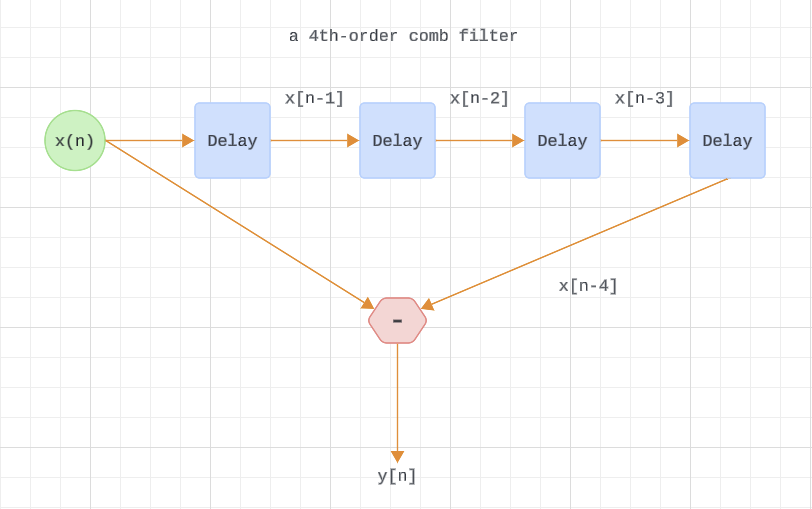
(b) an integrator: ,
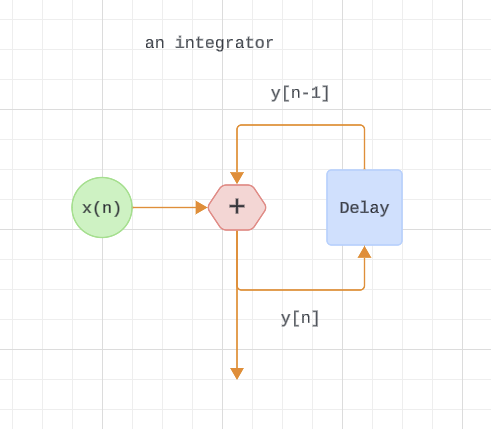
(c) a leaky integrator: [the scalar value is a real-valued constant in the range ].
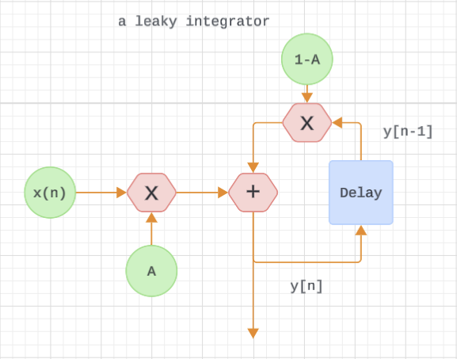
(d) a differentiator:
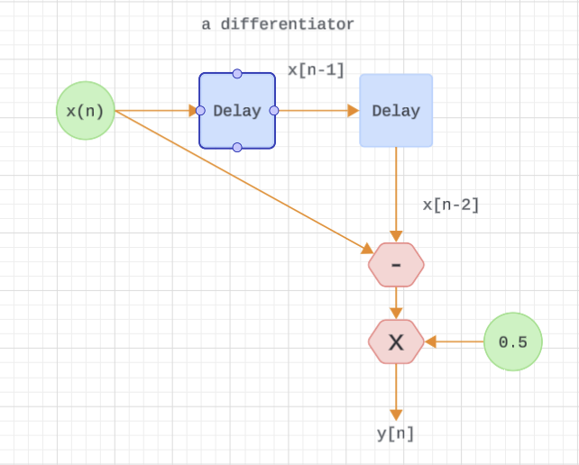
1.21
Draw the unit impulse responses (the output sequences when the input is a unit sample impulse applied at time ) of the four processes listed in Problem 1.20. Let for the leaky integrator. Assume that all sample values within the systems are zero at time .
(a)
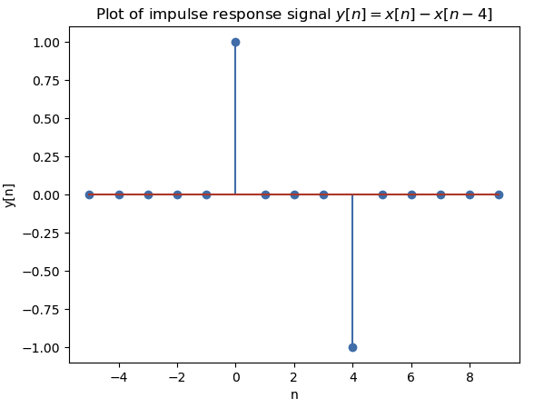
(b)

(c)
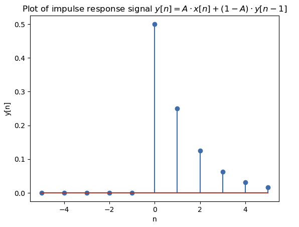
(d)
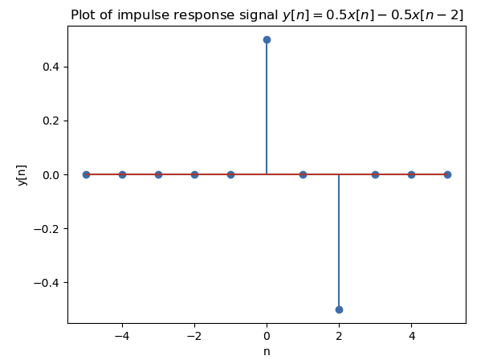
1.22
DSP engineers involved in building control systems often need to know what is the step response of a discrete system. The step response, , can be defined in two equivalent ways.
- One way is to say that is a system’s response to an input sequence of all unity-valued samples.
- A second definition is that is the cumulative sum (the accumulation, discrete integration) of that system’s unit impulse response .
Algebraically, this second definition of step response is expressed as
In words, the above expression tells us: “The step response at time index is equal to the sum of all the previous impulse response samples up to and including ." With that said, what are the step responses of the four processes listed in Problem 1.20? (Let for the leaky integrator.) Assume that all sample values within the system are zero at time .
(a)
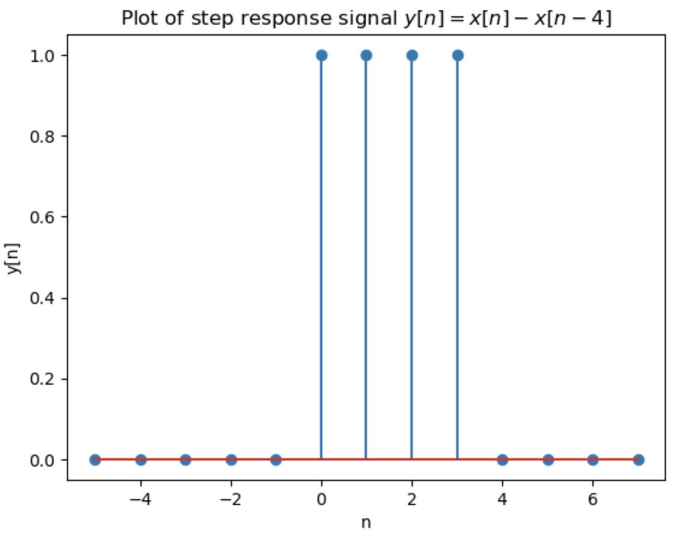
(b)
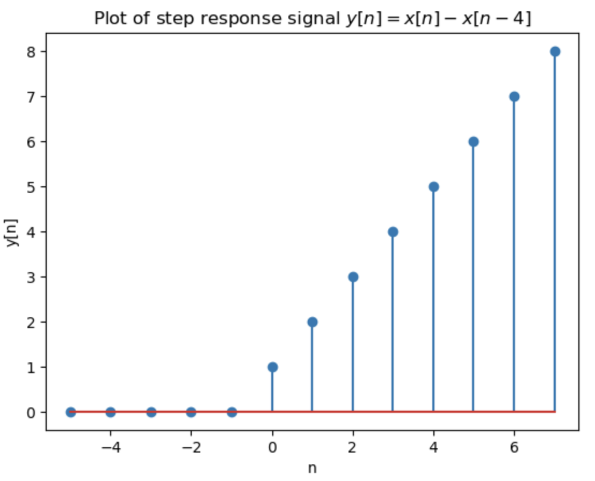
(c)
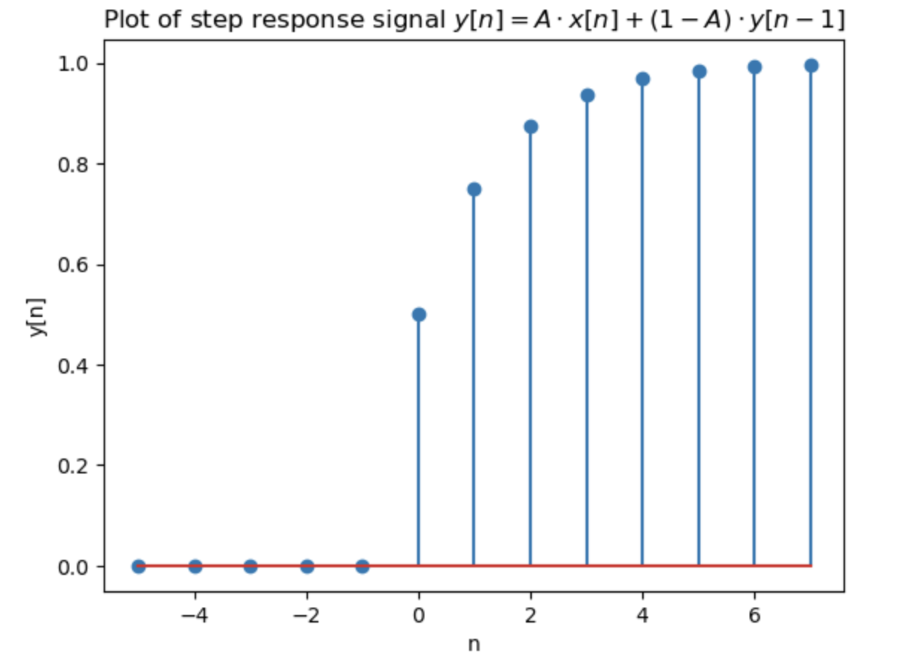
(d)
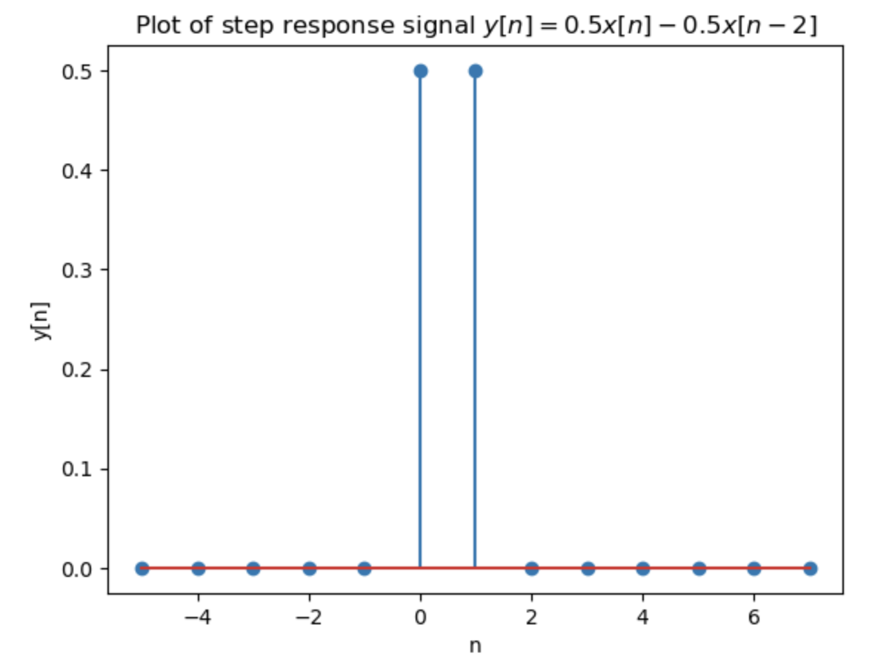
1.23
Thinking about the spectra of signals, the ideal continuous (analog) square-wave in Figure P1–23, whose fundamental frequency is Hz, is equal to the sum of an Hz sinewave and all sinewaves whose frequencies are odd multiples of Hz.
We call “ideal” because we assume the amplitude tran- sitions from plus and minus A occur instantaneously (zero seconds!). Continuous Fourier analysis of the squarewave allows us to describe this sum of frequencies as the following infinite sum:
Using a summation symbol, we can express squarewave algebraically as
Answer:
(a) Imagine applying s(t) to a filter that completely removes ’s lowest-frequency spectral component. Draw the time-domain waveform at the output of such a filter.
Solution:
Removing ’s lowest-frequency spectral component means
The code:
# 1.23
t = np.arange(-2, 4, 0.01)
A = 1
y = np.zeros_like(t)
start = 3
end = 10
for k in range(start, end, 2):
y = y + np.sin(2 * np.pi * k * t) / k
y = 4 * A / (np.pi) * y
plt.xlabel('t');
plt.ylabel(r'y');
plt.title(r'Plot of s(t) w/o lowest-freq. component.');
plt.plot(t, y);
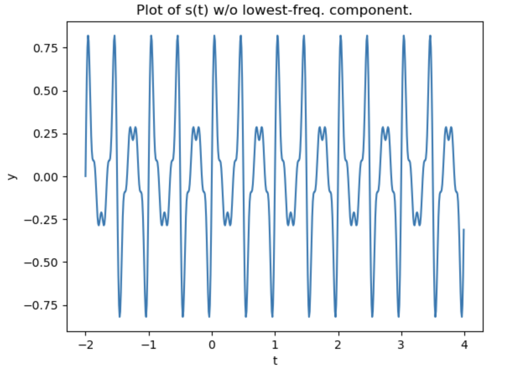
(b) Assume represents a voltage whose fo fundamental frequency is 1 Hz, and we wish to amplify that voltage to peak amplitudes of ±2A. Over what frequency range must an amplifier operate (that is, what must be the amplifier’s passband width) in order to exactly double the ideal 1 Hz squarewave’s peak-peak amplitude?
Solution: Since the ideal squarewave has frequency components for Hz, then the passband width has to be infinite.
1.24
This interesting problem illustrates an illegal mathematical operation that we must learn to avoid in our future algebraic activities. The following claims to be a mathematical proof that . Which of the following steps is illegal? Explain why.
Proof that :
Step 1:
Step 2:
Step 3:
Step 4:
Step 5:
Step 6:
Solution: From step 4 to step 5 is illegal. In general, if , it's possible that .